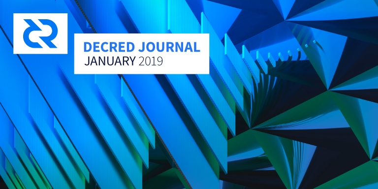

Decred月报 - 1月

Decred 以一项重大软件发布和其他重大进展启动了2019年的第一个月份。
新版本节点及钱包软件(v1.4.0)发布将启动一项共识规则投票(及其他重大更改)。请大家及时升级。
使用Decred点对点SPV模式的安卓移动钱包(v1.0)已发布。用户可以到谷歌 Play Store下载。
@jy-p在博客文章中描述的去中心化交易基础设施 RFP 提案已在 Politeia 发布。
定义 Decred 基础信息的社区咨询过程已经结束。其中这项消息传递中的标语为：“Decred: Secure. Adaptable. Self-Funding.”。外联工作目前已经转移到计划年度活动。预发布版的活动及推广开销提案也已在聊天室和reddit上共享。
由于二月第一周推出的几项重要发展，本期月报也将包括二月初的一些进展。
v1.4.0 升级和共识投票
节点及钱包软件v1.4.0版本已发布。请到GitHub查看完整发布说明和下载链接。同时建议务必验证下载版本。
Decred 的1.4.0版本带来了重大改进，同时也包含了一项修改共识规则建议，以修复闪电网络相关的一个bug。建议节点运营尽快升级，以协助网络达成升级门槛值。升级软件后，用户将可设置投票偏好。升级进度可在voting.decred.org查看。
有关共识更改的技术细节请查看 DCP0004 和 @matheusd 发布的文章。
v1.4.0 最终版本和12月发布的Release Candidate 2版本相比，除了增加了投票议程外并没有其他大改动。
开发进展总结
dcrd: 在 v1.4.0 RC1 中发现了一个问题。更改 UTXO 反转的设置语义意外地修复了一个共识规则漏洞。目前不正确行为将被保留至下一次共识更改投票。感谢所有帮助发现和修复候选版本中错误的人。
共识更改投票的代码目前已完成并收录到最终v1.4.0 发布版。由于闪电网络的需要，该修复和投票应获得优先处理。DCP004 (Decred Change Proposal) 中说明了应该更改的细节并提出对于其他除了闪电网络的应用。这部分工作也改善了代码结构及加强测试。 @matheusd 发布了篇部落格文章概述了该漏洞，它的发现和响应方式。
开始讨论如何改进权益算法 以消除票价震荡-这会使票价变化更加稳定.
Decrediton: 发布v1.4.0版本客户端并修复了漏洞。
将配置选项指定为命令行参数的功能合并到主服务器。
Politeia: 启用了查看早期版本题案的功能。
正在开发的: 登陆弹出窗口被新的定向文档链接取代 。感谢 lemonkabir 发现了这些安全问题。缓存层进入审核阶段。
讨论:
- 发现需要审查公共提案的管理员功能: 要有一种方法来删除在编辑后包含无关内容的公开提案。或者，管理员必须先审核所有修改的内容，然后才能在提案系统上显示这些修改的内容。
- 自动化端到端测试 和 质量检测目录 的变更。
- 大型代码前端重构以解决复杂性、性能和开发效率的问题。提出的解决方案是使用GraphQL。
dcrandroid: 安卓版钱包正式版v1.0发布了! 你可以在Google Play商店获取主网或测试网钱包。你可以在faucet获取测试网代币。欢迎来Reddit以及GitHub对测试发现的漏洞进行反馈。
与第二个测试版本不同的是，正式版增加了区块同步进度提示、wifi断开连接提示、新的启动画面以及漏洞修复。这里是 更改日志。恭喜 dcrandroid 团队!
dcrios:ios 钱包在苹果 app 测试工具 Apple TestFlight 上提供预览版。
dcrdata:新的主页设计正在进行。现在当发现新的区块时，主页上的数值会自动更新。将汇率监控添加到后端以便用户查看其实时美元价格。在区块浏览器和 Mainnet 子域上强制使用 HTTPS (正在讨论).
新的主页设计包含汇率、新的地址显示图、改进的图表以及速度的优化，你可以在beta.dcrdata.org的测试版v4中获取。详细的发布说明将与测试版本一起编译。
Dev side: @buck54321 正在破坏命令式 jQuery 代码。团队正在准备对Insight API 进行压力测试(他们称之为酷刑测试!)。
Ticket splitting 分票: 内部代码改进，完成在Decrediton集成的初步工作。创建了一个监控页面，它显示所有支持分票 VSP 的 DCR 贡献状态。
docs: 新的页面: Operating a VSP概述了搭建 VPS(PoS 矿池)的配置要求以及维护人员的技能要求,Solo PoS Voting中, @jz 更新了 solo 投票教程,Address Details描述了所有可能的地址类型,Contributing to Decred解释如何成为Decred的付费承包商。
在 #documentation 中对安全进行了深层次讨论，可以汇编对整个行业有益的通用计算机安全指南。
decred.org: @peter_zen 完成了将网站迁移到Hugo的巨大贡献。Hugo是一个用Go语言编写的静态站点生成器，可以更轻松地更新网站内容。已启用多个站点速度优化。 voting.decred.org 仪表板正在更新为即将到来的链上共识投票做准备，祝贺 @jholdstock 加入Go语言阵营！
Other:
- 新的 Bug Bounty 漏洞报告奖励网站也是用Hugo搭建的。代码存储库对错误报告和贡献是开放的。
- dcrwallet，dcrdocs和dcrweb中的术语得到更改。
- 项目逐渐转向使用更快的“golangci-lint linter”进行开发。
- 在decred.org上启用了更多安全标头。
- Decred链上数据的 SQL 界面可能会引起研究人员的兴趣
- GitHub 现在允许为拥有3个协作者的私人存储库提供免费帐户。
1月开发活动数据: 分布于8个存储库（repositories) 有 242 有效 PRs, 243 主要提交, 60K 行添加 及 47K 行删除。每个存储库中有来自2-8个开发者的贡献。
人员
欢迎新到来的首次贡献者，代码在 GitHub 上合并：Sarlor(dcrd)，laszlolm(decrediton)，dezryth (dcrdocs)。
恭喜在decred.org上列出的6位新贡献者：
- David Habibi (@eSizeDave，社区经理 - 澳大利亚)
- Elian Huesca (@elian，社区经理 - 墨西哥)
- Marcelo Martins (@mm，社区经理 - 葡萄牙)
- Mariusz Szyma (@donmario，社区经理 - 波兰)
- Morphy Tsai (@morphymore，社区经理 - 台湾)
- Tomasz Porwit (@kozel，教育和外展)
4名不活跃的开发者从decred.org中移除: Cruz Molina (@freethinkingaway, dcrdata), Huy Nguyen Tuan (@huyntsgs, dcrwallet), Macaulay Davies (@mcedward), Rohit Nagori.
独立Decred承包商发布了他们 2019年的计划，感谢他们大约15个人的贡献。这篇文章发布了关于路线图，核心规划和承包商自治的 讨论，以及来自Ditto的评论。
治理
1月，DCR基金会收到了 16,776 DCR，并花了 9,991 DCR。使用 DCR 1月份的每日平均美元价格17.1美元计算，本月收到 28.6万 美元以及支出 17万 美元。由于这些付款用于支付12月完成的工作，因此可以用12月的平均价格17.5美元计算 - 在这种情况下，美元收到的数字是29.4万美元以及支出17.5万美元。
承包商现在大约每月15日收到上个月工作的报酬。分发报酬和收到报酬之间的延迟从30天减少了一半。目前正在努力进一步降低这种延迟。
“RFP：基于Decred的去中心化交易所基础设施”提案由@jy-p提交。他在2018年6月第一次发布了构建DEX的动机和简短的设计文章。该项目预计在不到6个月内完成，预算在100,000美元至1,000,000美元之间。投票将分两个阶段进行：第一个阶段，提案将决定利益相关方是否想要实现这一目标，如果第一个提案获得批准，将邀请感兴趣的开发团队提出具体建议，第二阶段将选择其中一个。此过程称为提议请求.。
在去年12月通过投票提案后推出了 Decred Bug Bounty 计划（漏洞报告奖励计划）。在bounty.decred.org和 hackernoon的简介博客帖子上可以查看规则。大部分网站建设工作归功于 @fernandoabolafio 和 @jholdstock 。决定 bug 提交有效性和支付赏金的团队包括 @degeri，@ddldd，@fernandoabolafio，@jholdstock 和 @matheusd。恭喜团队顺利推出！
@Dustorf 正在准备提高透明度和增加利益相关者对营销活动资金分配的控制的建议。在matrix中首次迭代后，发布了预先提案的事件，以便对Reddit提供反馈。营销预算预提案也在matrix开始，并在第一轮反馈后记录在reddit中。
@oregonisaac 正在寻找 Java 开发人员来评估对于 ATM 集成的要求。提案草案已在matrix中发布和讨论。使用两阶段 RFP 投票达成了一些共识。另一个讨论则是关于是否等待移动应用程序发布后再继续 ATM 提案。
讨论:
网络
算力: 1月算力以 ～187 Ph/s 开始，以 ～225 Ph/s 结束，本月中最高 312 Ph/s 及最低 144 Ph/s。在2月8日根据 dcrstats.com 数据显示，矿池算力分布为：Poolin 29%, F2pool 26%, BTC.com 19%, UUPool 8%, Luxor 4%, CoinMine 1% 及 其他 13%。矿池分布数据为大约值无法精确计算。
投票: 按2月4日 dcrstats.com（数据显示）, 30日 平均票价为 109.4 DCR (+6.4)。价格在 101.5 DCR 至 111.6 DCR之间浮动。锁仓数额为 4.20-4.38 百万 DCR, 大约为总流通量的 46.3-47.5%。
一月份中共有 90 张分票。数据自2018年5月起稳定增长。
节点: 截止于2月4日，dcred.eu显示 共有 197 public listening Node 及 369 Normal Node。版本分布: v1.5.0 dev builds: 4.3% (+2.8%), v1.4.0 dev and rc builds: 13% (+6%), v1.3.0: 55%, v1.2.0: 14% (-6%), v1.1.2: 8% (-2%), v1.1.0: 3% (-1%).
挖矿
Obelisk 第2-5批次 已发货, 第二代固件 更新 包含新功能及漏洞修复。用户对于Obelisk SC1 和DCR1 发出了集体诉讼。
开源Decred挖矿池实现工作由 @dnldd 进行中。
整合
新矿池 (VSP) dcr.grassfed.network 加入了目前总共 23 个 VSP 的列表。
交易所整合:
Ellipal 钱包宣布 在最新固件发布中已支持 Decred。
Exodus 钱包集成 USDC, 一个Circle推出的美金挂钩代币。
@kozel的基础设施访问系列第二集特别访问Stephen，奢侈品店Crypto Emporium的创始人。他分享了经营企业，接受加密货币，处理订单，供应链和未来计划的见解。
我们网站上最畅销的产品无疑是著名的Decred Jacket！非常荣幸能够为Decred社区服务这么长一段时间并帮助推广一个我真正相信的项目。
在使用任何钱包或服务之前请务必进行研究，特别是那些保管您资金的服务。
Adoption
BlueYard 宣布第二个基金筹集并解释了他们投资逆势项目的策略。
外联活动
推广团队正在计划向媒体记者澄清关于 Decred 的不实新闻。作为该工作流程的测试案例，社区对一篇文章进行了详细审查，并且Ditto收集了针对该案例和未来案例的反馈。Ditto有系统的收集关于Decred的每一篇报道。随着他们更好地了解社区，可以实时解决信息不准确问题。另外一个讨论的问题是如何将Ditto的矫正工作与社区成员的自发纠正相结合。
Decred 的推广标语在 #marketing 以及 Reddit 上进行了广泛的讨论。最终获得最多认可的版本是“Decred: Secure. Adaptable. Self-Funding.（翻译为 Decred: 安全、适应性强、自筹资金）”。随着时间的推移，推广标语将会以应对市场不断被修改。
1月份来自Ditto的更新:
- 经历了基础消息传递文档的多次迭代，其中包含重要的社区投入，并获得了对最终版本的积极反馈。(讨论: 第二版, 最终版)
- 与社区合作，获取对关于51%攻击的看法，以便将来不可避免的发生攻击时与记者一起使用 —— 目标是就算在没有什么好消息分享的时候，也在记者面前提到 Decred 的信息。
- 媒体培训了三名Decred成员。
- 成功发布的媒体报道：“福布斯”专题文章(报导)，Joshua 和 Bitsonline 的视频采访，@richardred 在 Breaker Mag 以及 Crypto Briefing 中发表了对以太坊硬分叉延迟的相关看法。
- 起草了一个关于bug赏金计划的公告并将其置于Hacker Noon上 - 与 Decred 现有的渠道相比，这样可以覆盖更广泛的开发人员。
- 促进了两个正在等待媒体报道的采访。
- 出席北美比特币会议，在那里，Ditto促成了记者（切达电视台，Altcoin Buzz等等）对Decred的采访，并与团队共度了美妙的时光。
- 与 Dustin 密切合作并制定了一项活动计划，其中包括 Decred 想要发表演讲的活动以及想要参加展位的活动。
- 提交了 jake 在2019年的共识会议发言的申请。
- 与 Dustin 密切合作，制定了2019年上半年的营销和传播计划，涵盖信息传递、媒体培训、媒体关系、活动和演讲以及战略。该计划仍在策划中。
建议社区成员多分享媒体报道，因为其作用与媒体播报一样重要。
有关更多细节，请参阅1月7日和1月18日双周更新。在其中你会发现：
社区欢迎并鼓励发言提问，即使有人担心他们的问题是“愚蠢的”。 我们观察到了在其他社区中没有见过的“合作精神”和“自发帮助精神”。 真令人耳目一新！
其它:
- 有传言称，Ditto 可以安排一个有炫酷胡子的人穿上银色Decred夹克。
- @anshawblack 在迈阿密的所有唱片店放下了 Decred 标识。
- Decredible 商店更新了额外的物品和新的 Decred 徽标。所有产品都可以进行个性化设置和调整。
紧急通知：新批次的Stakey毛绒玩具可供选择！！
社区活动
出席：
- 在美国迈阿密举行的北美比特币会议。出席率低得惊人：原本预计6000人，结束后统计只有1800人参与。@jy-p介绍区块链时间戳应用的演讲做得很好，参与人数很多。3名成员接受了媒体培训，发现它很有用，还有7名成员预定了培训。价值存储，“安全、适应性、自筹资金” 以及随附的消息传递被认为是谈论Decred非常有效的方式。它被发现是最清晰和最有影响力的。请点击这里查看带有照片和视频的完整报告。
- OKEx Global Meetup Tour在台北举行。@morphymore 分享了Decred及其工作原理。“与2018年相比，人们开始更好地认识Decred。有些人告诉我，他们从我去年翻译的 Placeholder's Investment Thesis 中文翻译中了解 Decred。这非常令人鼓舞，表明Decred在台湾被更多人知道。 (报告, 照片)
- 10 lat Bitcoina在波兰的华沙举行。@karamble 在 Decred 的基础上谈到了加密货币的长久生存。4人团队与几个加密网点建立了关系，并与一些企业合作。BitHub.pl指出：“ Decred 团队成员非常积极地回答那些感兴趣的人的问题，因为这些问题源源不断的在提出！”。(报告)
即将到来的：
- Campus Party巴西圣保罗，二月12-17日。
- How To Keep Your Crypto Secure 澳大利亚墨尔本，二月18日。
- Decred in 30 minutes 墨西哥墨西哥城，二月27日。细节可联系@elian。
- Jalisco Talent Land 墨西哥瓜达拉哈拉，四月22-26日。如果您有兴趣帮忙或出席请联系@elian。
开源及黑客主题活动，如DEFCON，CCC和FOSDEM在这个issue中被讨论和记录
媒体
社区:
- blog.dcrclub.org 是一个新上线，集合各个文章及翻译于一处的中文网站。源代码在GitHub使得社区更容易贡献或复原网站到其他域名感谢@TogT4V (电报)制作了这个网站。
- @butterfly (@arij on Matrix)开始了新的关于 Decred 的阿拉伯语部落格。在网站发布阿拉伯文字遇到了一些难题，欢迎到 #writers_room提出建议。
- 葡萄牙语播客由@michae2xl制作, 在 Soundcloud, Spotify, Apple Podcasts 及 Google Podcasts 上请搜索"Decred Brasil"。
- @decredexplorer 是一个专注于dcrdata的新推特账户。感谢 @michae2xl 帮忙组织。
- @Matt D 在电报群推出 Decred Aggregator。目标为集合新闻，媒体，视频，播客，Decred 公告，热门推特和Reddit链接以及市场数据。
- @anshawblack 正计划制作一个播客。
维基百科上的 Decred 页面已被删除。1月8日，用户删除了一堆“坏来源的消息”，并在1月10日通过删除大量重要内容来破坏页面。仅仅4个小时后，另一位用户提名了Decred页面进行删除 - 这是第三次尝试将其删除。背景消息，第二位申请删除页面的作者对于显着性有着有趣的看法，并被认定为一个“傀儡马甲”。 在1月11日，其作者被认定为“傀儡马甲”并还原了删除内容，但继续被另一个用户继续申请删除，而且该删除申请没有很多评论。禁止后，页面变得非常小，所有评论者都因为缺乏信誉良好的来源为由，投票决定删除。最近在主流加密媒体发布的文章都被认为是不好的参考文献。1月18日，该页面被删除并从加密货币列表中移除，只留下了些主流加密货币。请参阅有关讨论的详细信息和链接。欢迎有经验的维基百科编辑提供帮助。
精选文章（按时间顺序排列）：
- 来自比特币女博士的“DCR的链上治理了解一下” (中文, qq.com, 英文翻译页面, 2018年12月份期刊遗漏记载)
- 来自 Piotr Arendarski 的 “ Decred 基本面分析”(linkedin.com)
- 来自@jy-p的 “如何简单的度过加密货币寒冬？”(coindesk.com,标语在 #marketing 中集体头脑风暴)
- Janusz Zielinski对Decred社区经理@donmario的采访 (bithub.pl)
- 由Steve Walters 撰写的 “Top 6 最佳存储DCR的钱包”（coinbureau.com，当作者回应并纠正所有报告的问题时，这是一个很好的案例）
- 谁应该掌握权力？Decred社区自治对其投资者意味着什么。(forbes.com)
- 2019年颁布的独立承包商路线图(medium)
- 来自 Paul de Havilland 的 “Decred的独特共识机制——这是真正的权力下放吗？”(bitsonline)
- 来自殷国超的 “从福布斯的一篇文章谈Decred（DCR）的价值存储功能” (中文, qq.com,英文翻译页面)
- 来自 Evaluape 的 “区块链项目审查: Decred:自主的数字货币”(medium, Decred 评分8.4/10)
- 来自Edwin的 “Decred替代比特币？”(荷兰bitcoinsaltcoins.nl, Decred评分8.8/10)
- 来自Daniel Frumkin的 “在这个加密货币寒冬，3种加密货币交给Hodl（意见）” (investinblockchain.com)
- 加密货币的基本价值；比特币和 Decred 在 LCC 投资研究中作为价值存储的投资价值 (seekingalpha.com)
- 来自 @richardred 的 “Decred 选民在防御攻击中的作用” (medium)
- 来自 @Haon 的 “在数字货币背景下的链下去中心化治理” (goodaudience.com)
- 来自 @kozel 的 “Decred基础设施访谈：由Stephen创建的仅限加密货币支付的奢侈品市场CryptoEmporium” (medium)
- 来自 Lee Banfield 的 “ Decred 审查” (weeklyglobalresearch.wordpress.com)
翻译:
- Detailed analysis of Decred fork resistance by @Haon - 俄罗斯语 by @DZ
- Decred Journal - December 2018 中文 by @guang, 波兰语 by @kozel, 葡萄牙语 by @maiconjunge, 俄罗斯语 by @DZ 及 西班牙语 by @elian. 哇，感谢大家把 Decred 月报发扬到全世界！所有的翻译都已收录到此链接.
视频:
- 区块链时间戳的应用 @jy-p(youtube)
- TNABC 的采访 with @joshuam来自Hack Crypto, with @joshuam来自Bitsonline, with @DZ, with @jz来自CNBC Crypto Trader。
- 治理：区块链最受忽视的支柱 - 由 @oregonisaac 在 Token Forum 2 上发表演讲 (tfblock.io)
音频:
- 利用 Decred 深入挖掘自主加密货币：@moo31337 和 @BAB 谈论去中心化决策和自筹资金如何使得 Decred 能够建立一个强大的，不断发展的数字货币且不受第三方影响（与 Rachel Wolfson 一起使用 Crypto Chick Podcast），badcryptopodcast.com)
- Noah Pierau 关于区块链治理：Decred、比特币、Dash、以太坊（Tom Shaughnessy、itunes 的51%加密研究）
- 来自 Marco Peereboom 的 “怎样革命性的改变加密货币” Michael Nye 和Marco讨论了当前的加密状态，Decred是如何开始的，PoW与PoS，Decred 的自治基金会模式等 (Evolvement播客, evolvement.io)
社区讨论
截止于 Feb 4 的社区数据 :
- Twitter followers: 39,778 (-106)
- Reddit subscribers: 9,330 (+89)
- Matrix users: 247 (+26)
- Slack users: 6,529 (+110)
- Telegram users: 4,503 (-231)
- YouTube subscribers: 3,752 (+14)
- Facebook followers: 3,132 (+11), likes: 2,891 (+11)
- LinkedIn followers: Decred page 466 (+16), Politeia page 27 (+3)
- GitHub dcrd stars: 468 (+10), forks: 1,221 (+29)
社交系统新闻：
- Twitter 不明原因且缓慢的掉粉欢迎任何的想法提交。
- 电报群粉丝减少可能是由于机器人的剔除。
- @sambiohazard 写了一个周密的计划来解决Discord垃圾邮件，经过几周的部署和测试后，并没有收到垃圾邮件。几个重要的渠道与Discord联系在一起。 有了这个，我们终于可以将Discord作为一个机会来吸引更多人。谢谢！
- decred.org/matrix引导新matrix用户进入系统。
- 截至2月9日，[decred-issues](https://github.com/xaur/decred-issues）增加到105个问题。看看，也许你会发现一些有趣的事情要做！
来自比特币极端主义者的批评引发了从证劵法看 Decred 的讨论。一位批评点是Decred的预挖和空投是不公平和“手选”的。这是对团队手动过滤空投虚假账户行为的误解，这些讨论描述了 Decred 开始的发布。一个有趣的见解是，约300K（35％）空投硬币从未移动过。 另一个相关的聊天是关于Twitter攻击声称Decred的初始分发是如何不透明或不公平的，同时回避了有关比特币早期采矿和Satoshi百万BTC的不便事实。最后，历史记录解释了早期的投票共识，并指出原始开发者从第1天开始就没有单方面控制共识规则。
建立Reddit社区的重要性获得巨大争论。查看详情。
市场
在一月中DCR交易价格为 美金 15.5-19.5 / BTC 0.00435-0.00487。平均日汇率为 17.1 美元。
相关外部信息
以太经典（ETC）受到51％的攻击，CoinNess于1月7日提出警报。然后 CoinNess宣布它已经检测到ETC链的深度重组并停止了ETC交易。文章列出了涉及双重花费的一些重组，在15个不同的重组活动中涉及的总金额为110万美元。 Coinbase 本身并不是这些攻击的目标。Gate.io 交易所随后公布了它已成为目标并且已经损失了大约20万美元，并将承担损失。Gate.io 还显著增加了 ETC 存款所需的确认数量。在一个不寻常的开发中，攻击者随后将100万美元的 ETC 返还给 Gate.io，他们已经尝试但未能与攻击者联系并且不知道返还资金的原因。ETC双重花费的其他受害者还没有挺身而出。
Ethereum 的开发人员（暂时）于1月4日决定继续将 Ethash 的挖矿算法改为 ProgPoW。 此举旨在阻止 ASIC 开采以太坊。 The Block指出了一些担忧如切换后降低的攻击成本，GPU 矿工的激励措施较弱，从 Bitmain 和 Innosilicon 向 AMD 和Nvidia 转移电力的好处以及可能出现连锁拆分等问题。 他们的结论是围绕算法转换的辩论将是以太坊治理过程的一个很好的测试。
以太坊开发商也在1月15日推迟了君士坦丁堡的硬分叉，因为一个安全漏洞可能会导致“重放攻击”。
David Vorick 撰写的“工作量证明基础”文章介绍了独有的硬件加密货币，并将其与存在多个问题的共享硬件加密货币进行了对比，特别是那些追求ASIC阻力的问题。 非专用硬件的一个问题是硬件的价值与资产没有密切关系（因为它可以挖掘许多其他链）。 另一个问题是哈希算力市场，它们允许硬件所有者通过出租他们的设备开采其它加密货币获得更多利润，即使哈希值被租给攻击者。 从专用硬件中获得的好处是迄今为止其算法（Blake256r14）的主要硬币。 虽然这个硬件不能被认为是Decred的“独家”，但除了当前的哈希值优势之外，Decred还有PoS共识能够拒绝对行为不端的矿工（例如打包空块）。
第一轮Aragon提案投票于1月26日结束。在提交的12项提案中，3项被Aragon贡基金会排除在投票之外（1项因缺乏全职领导和工程人才，2项因投票者缺乏认知被排除）。投票通过的9项提案中有8项获得了ANT持有人的批准，其中一项提案（将投票期限从48小时改为1周）被拒绝。 ANT参与率介于2.3％至7.8％之间。获得批准的最昂贵的提案将向Aragon One支付400万美元，用于支付2019年运营成本加上一项价值167.5万ANT，为期5年的激励计划。除了在DAI中支付的主要成本之外，大多数提案都包括ANT的奖励和归属时间表。 总共这一轮批准的提案将耗资约594万美元+252万ANT（约合880,000美元）。
EOS的宪法修正案公民投票制度于1月11日开始实施。迄今已提交了77项提案。 这些提案的投票期是灵活的，由提交者指定，有些期限长达四个月。 得票最多的投票（截至1月31日）的投票率约为流通EOS的2％，但大多数提案的参与率非常低（只有10个参与者的参与率超过0.5％）。 到目前为止，最受欢迎的提案是改变简称和RAM购买的费用，删除EOS核心仲裁论坛，并在eosio.saving中燃烧通货膨胀资金（用于资助工人提案系统）。
NEM基金会宣布其财务困难，需要缩减其员工队伍。 1月1日，一个新的理事会接管了这个基金会，当他们打开记录时，他们看到了一个问题。 上一届理事会每月的燃烧率为900万XEM（现在为360,000美元，当时要多得多），一些独立区域实体花钱在一些无关的活动中进行推广。这被认为是不可持续的，新的理事会已经重组了基金会，目前正在寻求额外的资金。
Wassim Alsindi（@parallelind）“分叉学”的研究随着最新的更新发布 。
Hcash项目fork（复制并修改）了几个Decred的项目：Autonomy（Politeia），hcexplorer 和 hctime。在Politeia，他们意外删除了Decred开发人员的版权，忘了重命名该项目。收到通知后，他们迅速做出反应，删除多个存储库，恢复许可证并将 Politeia fork 重命名为 Autonomy。修复了一些错漏了微妙Decred图标。一些项目提交历史被删除的分叉，并没有在GitHub上将它们标记为分叉。他们的subreddit上的投诉(1, 2)被默默审查，没有回复。r/hcash样式看起来也很熟悉。 在这里讨论。
一个令人遗憾的例子，说明当团队资金耗尽时会发生什么。
ICO项目于2018年12月从总量中收回了约441K ETH（截至2月9日为5,250万美元）。
Staked是一家为机构投资者提供投票服务的创业公司，从 CoinDesk, The Block，Bloomberg 等公司筹集了450万美元。 由 CoinDesk，The Block和Bloomberg所涵盖。Staked自2018年11月开始运营 Decred VSP。
Binance现在允许使用Visa和MasterCard购买加密货币(中国在受限列表内)。
Coinbase禁止社交媒体平台Gab的账户。这不是交易所暂停账户的第一个大案例。
Medium审查了一篇文章 “如何匿名使用比特币” ，引发了讨论以及有关迁移它的问题，或者至少将其视为多个内容镜像之一。备份您的Medium帖子，以防万一。
国际清算银行（Bank for International Settlements）发布了一项非常乐观的加密货币研究。
Vulnerability 在比特币和其他一些系统的数字签名中发现了漏洞。使用签名算法的错误实现生成了一小组签名，该签名算法可用于显示私钥。 在审查的近10亿比特币签名中，只有几千个签名易受攻击。据研究人员称，绝大多数加密货币用户不必担心。
历史上最大的数据泄露包含数千个被黑客入侵的 数据库。明智地选择与谁共享数据。
Cryptopia被黑客攻击，损失估计在3-16百万美元之间。Binance冻结 了来自黑客的一些资金。
据最新报道，针对比特币矿机的新一波 hAnt 感染(首次见于8月)。勒索软件需要感染1000个其他设备需其支付10 BTC，否则它可能会烧毁钻机。 到目前为止，没有关于设备被毁的报告。
称为假冒 PoS 股权攻击的资源耗尽漏洞是在26个基于 PoSv3 的区块链中发现的，其中大多数都采用了缓解措施。部分原因在于，在许多此类系统中，股权证明层不安全地“嫁接”到比特币核心代码库。报告的一位作者发推文说 Decred 没有受到影响。
关于月报
1月为英文第10期 GitHub 月报。 点击这里浏览所有往期月报，翻译等。
大部分来自第三方的信息在基本检查无误后转发。Decred Journal 及月报作者无法验证所有信息。请注意骗局并进行自己的研究。
欢迎在 Reddit, GitHub 和 Matrix 上评论，反馈及贡献。
感谢 (按字母排序): bee, davecgh, degeri, Dustorf, guang, Haon, jholdstock, liz_bagot, lukebp, matheusd, richardred, zubairzia0.
中文社区
欢迎同时关注英文月报了解更多最新消息
中文月报相关意见欢迎提交到Github
感谢 (按字母排序): Dominic, Guang, Hugo, Jill